정보처리기사(구) (2014-05-25 기출문제)
1과목: 데이터 베이스
1. Which of the following does not belong to the DML statement of SQL?
- DELETE
- ALTER
- SELECT
- UPDATE
(정답률: 82%)

2. 정규화에 대한 설명으로 옳은 내용 모두를 나열한 것은?
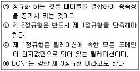
- (ㄱ), (ㄴ)
- (ㄱ), (ㄴ), (ㄷ)
- (ㄴ), (ㄷ), (ㄹ)
- (ㄱ), (ㄴ), (ㄷ), (ㄹ)
(정답률: 68%)
3. 릴레이션의 특징으로 옳은 내용 모두를 나열한 것은?
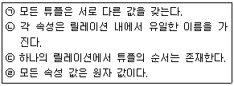
- (ㄱ), (ㄷ)
- (ㄱ), (ㄴ), (ㄹ)
- (ㄱ), (ㄷ), (ㄹ)
- (ㄱ), (ㄴ), (ㄷ), (ㄹ)
(정답률: 79%)
4. 데이터베이스의 설계단계 순서가 옳은 것은?
- 요구조건 분석단계 → 개념적 설계단계 → 논리적 설계단계 → 물리적 설계단계 → 구현 단계
- 요구조건 분석단계 → 논리적 설계단계 → 개념적 설계단계 → 물리적 설계단계 → 구현 단계
- 요구조건 분석단계 → 개념적 설계단계 → 물리적 설계단계 → 논리적 설계단계 → 구현 단계
- 요구조건 분석단계 → 논리적 설계단계 → 물리적 설계단계 → 구현 단계 → 개념적 설계단계
(정답률: 85%)
5. 정규화 과정에서 A→B이고 B→C일 때 A→C인 관계를 제거하는 단계는?
- 1NF → 2NF
- 2NF → 3NF
- 3NF → BCNF
- BCNF → 4NF
(정답률: 68%)
6. 관계대수에 대한 설명으로 옳지 않은 것은?
- 릴레이션을 처리하기 위한 연산의 집합으로 피연산자가 릴레이션이고 결과도 릴레이션이다.
- 원하는 정보와 그 정보를 어떻게 유도하는가를 기술하는 절차적 특징을 가지고 있다.
- 일반 집합 연산과 순수 관계 연산이 있다.
- 수학의 Predicate Calculus 에 기반을 두고 있다.
(정답률: 66%)
7. 다음 트리를 중위 순회(Inorder Traversal)한 결과는?
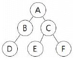
- A B D C E F
- D B A E C F
- A B C D E F
- D B E F C A
(정답률: 73%)
8. 뷰(VIEW)에 대한 설명으로 옳은 내용 모두를 나열한 것은?
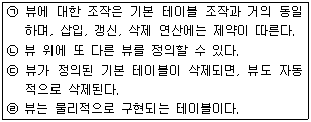
- (ㄱ), (ㄴ)
- (ㄴ), (ㄹ)
- (ㄱ), (ㄴ), (ㄷ)
- (ㄱ), (ㄴ), (ㄷ), (ㄹ)
(정답률: 78%)
9. 데이터 모델의 구성 요소가 아닌 것은?
- 추상적인 개념으로 조직된 구조
- 구성 요소의 연산
- 구성 요소의 제약조건
- 구성 요소들의 저장 인터페이스
(정답률: 50%)
10. 트랜잭션의 특성 중 둘 이상의 트랜잭션이 동시에 병행 실행되는 경우 어느 하나의 트랜잭션 실행 중에 다른 트랜잭션의 연산이 끼어들 수 없음을 의미하는 것은?
- atomicity
- consistency
- isolation
- durability
(정답률: 71%)
11. 시스템 카탈로그에 대한 설명으로 옳지 않은 것은?
- 시스템 카탈로그에 저장되는 내용을 메타 데이터라고도 한다.
- 시스템 자신이 필요로 하는 스키마 및 여러 가지객체에 관한 정보를 포함하고 있는 시스템 데이터베이스이다.
- 기본 테이블, 뷰, 인덱스, 패키지, 접근 권한 등의 데이터베이스 구조 및 통계 정보를 저장한다.
- 시스템 카탈로그는 사용자가 직접 생성하고 유지한다.
(정답률: 86%)
12. 다음 그림에서 트리의 차수는?
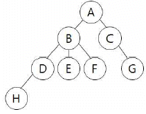
- 3
- 4
- 6
- 8
(정답률: 80%)
13. 다음 영문의 괄호 안에 적합한 수식의 표현은?
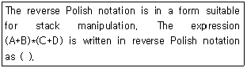
- A B + C D + *
- A B + C D * +
- + A B + C D *
- * + A B + C D
(정답률: 63%)
14. 로킹(locking) 단위에 대한 설명으로 옳지 않은 것은?
- 로킹의 단위가 작아지면 로킹 오버헤드가 증가한다.
- 로킹의 대상이 되는 객체의 크기를 로킹 단위라고 한다.
- 로킹의 단위가 커지면 병행성 수준이 낮아진다.
- 파일은 로킹 단위가 될 수 있으나, 데이터베이스는 로킹의 단위가 될 수 없다.
(정답률: 76%)
15. 순서가 A, B, C, D 로 정해진 입력 자료를 스택에 입력하였다가 출력한 결과로 가능한 것이 아닌 것은?
- A, D, B, C
- D, C, B, A
- B, C, D, A
- C, B, A, D
(정답률: 71%)
16. 병행제어의 목적으로 옳지 않은 것은?
- 시스템 활용도 최대화
- 데이터베이스 공유도 최소화
- 사용자에 대한 응답시간 최소화
- 데이터베이스 일관성 유지
(정답률: 81%)
17. 다음은 학생이라는 개체의 속성을 나타내고 있다. 여기서 “학과”를 기본 키로 사용하기 곤란한 이유로 가장 타당한 것은?
- 학과는 기억하기 어렵다.
- 학과는 정렬하는데 많은 시간이 소요된다.
- 학과는 기억 공간을 많이 필요로 한다.
- 동일한 학과명을 가진 학생이 두 명 이상 존재할 수 있다.
(정답률: 86%)
18. 스키마의 종류 중 다음 설명에 해당하는 것은?
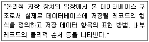
- 외부 스키마
- 내부 스키마
- 개념 스키마
- 슈퍼 스키마
(정답률: 74%)
19. 색인 순차 파일에 대한 설명으로 옳지 않은 것은?
- 순차 처리와 직접 처리가 모두 가능하다.
- 레코드의 삽입, 삭제, 갱신이 용이하다.
- 인덱스를 이용하여 해당 데이터 레코드에 접근하기 때문에 처리 속도가 랜덤 편성 파일보다 느리다.
- 인덱스를 저장하기 위한 공간과 오버플로우 처리를 위한 별도의 공간이 필요 없다.
(정답률: 71%)
20. 데이터베이스의 특성으로 옳지 않은 것은?
- 데이터베이스는 계속적으로 변화된다.
- 데이터베이스의 데이터는 그 주소나 위치에 의해 참조된다.
- 데이터베이스는 실시간으로 접근한다.
- 데이터베이스는 동시 공용이다
(정답률: 81%)
2과목: 전자 계산기 구조
21. 레지스터 참조 명령어와 거리가 먼 것은?
- CLA(clear AC)
- CIR(circulate right)
- HLT(halt)
- BUN(branch unconditionally)
(정답률: 50%)
22. 캐시 메모리의 기록 정책 가운데 쓰기(write) 동작이 이루어 질 때마다 캐시 메모리와 주기억장치의 내용을 동시에 갱신하는 방식은?
- write-through
- write-back
- write-once
- write-all
(정답률: 66%)
23. 다중처리기 상호 연결 방법 중 하나의 프로세서에 하나의 버스가 할당되어 버스를 이용하려는 프로세서 간 경쟁이 적은 것은?
- 시분할공유버스
- 크로스바 교환 행렬
- 하이퍼큐브
- 다중포트 메모리
(정답률: 31%)
24. RISC(Reduced Instruction Set Computer) 와 CISC(Complex Instruction Set Computer)에 대한 설명 중 옳지 않은 것은?
- RISC는 실행 빈도가 적은 하드웨어를 제거하여 자원 이용률을 높이는 장점이 있다.
- RISC는 프로그램의 길이가 길어지므로 수행 속도가 느린 단점이 있다.
- CISC는 고급언어를 이용하여 알고리즘을 쉽게 표현 할 수 있는 장점이 있다.
- CISC는 복잡한 명령어군을 제공하므로 컴퓨터 설계 및 구현시 많은 시간을 필요로 하는 단점이 있다.
(정답률: 57%)
25. DMA 제어기의 한계를 극복하기 위하여 사용하는 방식은?
- 다중 인터럽트
- 프로그램 된 I/O
- I/O 프로세서
- 멀티플렉싱
(정답률: 38%)
26. 하나의 명령 사이클을 실행하는데 2개의 머신 사이클이 필요하다고 했을 때 CPU 클록 주파수를 10MHz로 동작시켰다. 이때 1개의 명령 사이클을 실행하는데 걸리는 시간은?(단, 각각의 머신 사이클은 5개의 머신 스테이트로 구성되어있다.)
- 1 μs
- 2 μs
- 10 μs
- 20 μs
(정답률: 36%)
27. 자기 디스크에 헤드가 가까울수록 불순물이나 결함에 의한 오류 발생의 위험이 더 크다. 이러한 문제점을 해결한 것은?
- 윈체스터 디스크
- Solid State Disk
- 플래시 메모리
- 콤팩트디스크
(정답률: 51%)
28. D 플립플롭에 입력 D가 들어오고, 클록펄스가 들어올 때 출력 Q(t+1)의 식은?
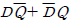
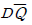
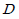
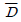
(정답률: 47%)
29. 기억장치가 1024 word로 구성되고, 각 word는 16bit로 이루어져 있을 때 PC, MAR, MBR의 bit 수를 각각 바르게 나타낸 것은?
- 16, 10, 10
- 10, 10, 16
- 10, 16, 16
- 16, 16, 10
(정답률: 67%)
30. 다음 중 피연산자의 위치(기억장소)에 따라 명령어 형식을 분류할 때 instruction cycle time이 가장 짧은 것은?
- 레지스터-메모리 instruction
- AC instruction
- 스택 instruction
- 메모리-메모리 instruction
(정답률: 58%)
31. 중앙처리장치의 기억 모듈에 중복적인 데이터 접근을 방지하기 위해서 연속된 데이터 또는 명령어들을 기억장치모듈에 순차적으로 번갈아 가면서 처리하는 방식은?
- 복수 모듈
- 인터리빙
- 멀티플렉서
- 셀렉터
(정답률: 66%)
32. 인스트럭션 수행시간이 10ns이고, 인스트럭션 페치시간이 5ns, 인스트럭션 준비시간이 3ns이라면 인스트럭션의 성능은 얼마인가?
- 0.5
- 0.8
- 1.25
- 5
(정답률: 47%)
33. 다음 [그림]은 어떤 종류의 병렬 컴퓨터를 나타낸 것 인가?
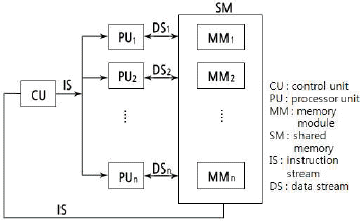
- SISD
- SIMD
- MISD
- MIMD
(정답률: 59%)
34. 마이크로프로그램 제어기가 다음에 수행할 마이크로 인스트럭션의 주소를 결정하는데 사용하는 정보가 아닌 것은?
- 인스트럭션 레지스터(IR)
- 타이밍 신호
- CPU의 상태 레지스터
- 마이크로 인스트럭션에 나타난 주소
(정답률: 55%)
35. 중앙처리장치의 입출력 명령을 직접 수행해서 주기억장치와 입출력장치 사이에 데이터를 전달하도록 하는 입출력 제어기의 일반적인 기능이 아닌 것은?
- 하나의 제어기로 여러 종류의 I/O 장치들을 공통적으로 제어하는 기능
- 주기억장치와 입출력 제어기 사이의 통신회선을 확보하는 기능
- 입출력 제어기와 입출력장치 인터페이스 사이의 통신회선을 확보하는 기능
- 주기억장치의 주소, 데이터의 전달 방향(입력/출력), 데이터 등의 정보를 저장하는 기능
(정답률: 30%)
36. 디멀티플렉서(Demultiplexer)에 대한 설명 중 옳은 것은?
- data selector라고도 불린다.
- 2n 개의 input line과 n개의 output line을 갖는다.
- n개의 input line과 2n개의 output line을 갖는다.
- 1개의 input line과 n개의 selection line을 갖는다.
(정답률: 42%)
37. 다음 내용은 산술 파이프라인(arithmetic) 구조에서 정규화된 부동소수점 수의 연산을 할 때 실행되는 단계이다. 실행 순서가 옳은 것은?(일부 컴퓨터 오류로 인하여 보기가 정상적으로 보이지 않아서 괄호뒤에 다시 표기하여 둡니다.)
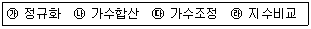
- 가 → 나 → 다 → 라
- 다 → 가 → 라 → 나
- 라 → 다 → 나 → 가
- 가 → 다 → 라 → 나
(정답률: 56%)
38. 인터럽트와 비교하여 DMA 방식에 의한 사이클 스틸의 가장 특징적인 차이점은?
- 프로그램을 영원히 정지
- 실행 중인 프로그램 정지
- 프로그램 실행의 다시 시작
- 주기억 장치 사이클의 한 주기만 정지
(정답률: 61%)
39. 양면 저장을 할 수 있는 2장의 디스크로 구성된 디스크 드라이브에 실린더(cylinder)가 8개이고, 각 트랙당 16섹터이며, 섹터당 512 byte를 저장할 수 있다면 이 디스크 드라이브에 저장 할 수 있는 총 용량은?
- 64 KB
- 128 KB
- 256 KB
- 512 KB
(정답률: 44%)
40. 프로그램 내의 모든 인스트럭션이 그들의 수행에 필요한 피연산자들이 모두 준비되었을 때 그 인스트럭션을 수행하는 것으로 데이터 추진(data driven) 방식이라 할 수 있는 것은?
- multiprocessor system
- vector processor
- pipeline processor
- data flow machine
(정답률: 42%)
3과목: 운영체제
41. 다중 처리기 운영체제 형태 중 주/종(Master/Slave)처리기에 대한 설명으로 옳지 않은 것은?
- 주 프로세서가 운영체제를 수행한다.
- 주 프로세서와 종 프로세서가 모두 입, 출력을 수행하기 때문에 대칭 구조를 갖는다.
- 주 프로세서가 고장이 나면 시스템 전체가 다운된다.
- 하나의 프로세서를 주 프로세서로 지정하고, 다른 처리기들은 종 프로세서로 지정하는 구조이다.
(정답률: 73%)
42. 운영체제의 운용 기법 종류 중 다음 설명에 해당하는 것은?
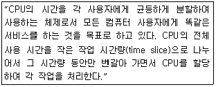
- Batch Processing System
- Multi Programming System
- Time Sharing System
- Real Time System
(정답률: 78%)
43. 운영체제에 대한 설명으로 옳지 않은 것은?
- 여러 사용자들 사이에서 자원의 공유를 가능하게 한다.
- 사용자 인터페이스를 제공한다.
- 자원의 효과적인 경영 및 스케줄링을 한다.
- 운영체제의 종류에는 UNIX, LINUX, JAVA 등이 있다.
(정답률: 79%)
44. 3개의 페이지 프레임(Frame)을 가진 기억장치에서 페이지 요청을 다음과 같은 페이지 번호 순으로 요청했을 때 교체 알고리즘으로 FIFO 방법을 사용한다면 몇 번의 페이지 부재(Fault)가 발생하는가? (단, 현재 기억장치는 모두 비어 있다고 가정한다.)
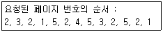
- 7번
- 8번
- 9번
- 10번
(정답률: 51%)
45. 분산처리 운영체제 시스템에 대한 설명으로 거리가 먼 것은?
- 유용한 자원을 공유하여 사용할 수 있다.
- 시스템의 점진적 확장이 용이하다.
- 사용자는 각 컴퓨터의 위치를 몰라도 자원의 사용이 가능하다.
- 중앙 집중형 시스템에 비해 보안성이 향상된다.
(정답률: 72%)
46. 스레싱(Thrashing) 현상을 해결하는 방법으로 틀린 것은?
- 다중 프로그래밍 정도를 증가시킨다.
- 프로세스가 필요로 하는 만큼의 프레임을 제공하여 예방한다.
- 일부 프로세스를 종료시킨다.
- 부족한 자원을 증설한다.
(정답률: 54%)
47. 파일 디스크립터에 대한 설명으로 옳지 않은 것은?
- 파일 제어 블록이라고도 한다.
- 시스템에 따라 다른 구조를 갖는다.
- 파일 시스템이 관리하므로 사용자가 직접 참조할 수 없다.
- 모든 파일이 하나의 파일 디스크립터를 공용한다.
(정답률: 51%)
48. UNIX에서 파일에 대한 정보를 갖고 있는 i-node의 내용으로 볼 수 없는 것은?
- 파일 링크 수
- 파일 소유자의 식별 번호
- 파일의 최초 변경 시간
- 파일 크기
(정답률: 71%)
49. 현재 헤드 위치가 53에 있고 트랙 0번 방향으로 이동 중 이었다. 요청 대기 큐에는 다음과 같은 순서의 액세스 요청이 대기 중일 때 SSTF 스케줄링 알고리즘을 사용한다면 헤드의 총 이동 거리는 얼마인가? (단, 가장 안쪽 트랙은 0번 트랙이다.)
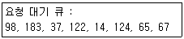
- 202
- 236
- 256
- 320
(정답률: 51%)
50. UNIX에 대한 설명으로 옳지 않은 것은?
- 2단계 디렉토리 구조의 파일 시스템을 갖는다.
- 대화식 운영체제이다.
- Multi-User 및 Multi-Tasking을 지원한다.
- 이식성이 높으며, 장치, 프로세스 간의 호환성이 높다.
(정답률: 72%)
51. 빈 기억공간의 크기가 20K, 16K, 8K, 40K 일 때 기억장치 배치 전략으로 “Worst Fit”을 사용하여 17K의 프로그램을 적재 할 경우 내부단편화의 크기는 얼마인가?
- 20K
- 23K
- 24K
- 44K
(정답률: 73%)
52. 자식 프로세스의 하나가 종료될 때까지 부모 프로세스를 임시 중지시키는 유닉스 명령어는?
- exit()
- fork()
- exec()
- wait()
(정답률: 66%)
53. 마스터 파일 디렉토리와 각 사용자별로 만들어지는 사용자 파일 디렉토리로 구성되는 디렉토리 구조는?
- 트리 디렉토리 구조
- 비순환 그래프 디렉토리 구조
- 1단계 디렉토리 구조
- 2단계 디렉토리 구조
(정답률: 60%)
54. 하이퍼큐브에서 하나의 프로세서에 연결되는 다른 프로세서의 수가 3개일 경우 필요한 총 프로세서의 수는?
- 4
- 8
- 16
- 32
(정답률: 77%)
55. FIFO 스케줄링에서 3개의 작업 도착시간과 CPU 사용시간(burst time)이 다음 표와 같다. 이 때 모든 작업들의 평균 반환시간(turn around time)은? (단, 소수점 이하는 반올림 처리한다.)
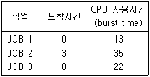
- 16
- 20
- 33
- 40
(정답률: 57%)
56. HRN 방식으로 스케줄링 할 경우, 입력된 작업이 다음과 같을 때 처리되는 작업 순서로 옳은 것은?
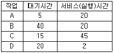
- A → B → C → D
- A → C → B → D
- D → B → C → A
- D → A → B → C
(정답률: 72%)
57. 보안 유지 방식 중 운영체제가 사용자의 신원을 확인한 후, 권한이 있는 사용자에게만 시스템의 프로그램과 데이터를 사용 할 수 있게 하는 방법은?
- 사용자 인터페이스 보안
- 내부 보안
- 시설 보안
- 운용 보안
(정답률: 68%)
58. RR(Round-Robin) 스케줄링 기법에 대한 설명으로 옳지 않은 것은?
- 시간 할당이 작아지면 프로세스 문맥 교환이 자주 일어난다.
- Time Sharing System을 위해 고안된 방식이다.
- 실행 시간이 가장 짧은 프로세스에게 먼저 CPU를 할당한다.
- 시간 할당이 커지면 FCFS 스케줄링과 같은 효과를 얻을 수 있다.
(정답률: 57%)
59. 운영체제의 기능으로 거리가 먼 것은?
- 사용자의 편리한 환경 제공
- 처리능력 및 신뢰도 향상
- 컴퓨터 시스템의 성능 최적화
- 언어번역 및 자원의 효율적 사용
(정답률: 72%)
60. 프로세스의 정의로 옳지 않은 것은?
- 프로시저가 활동 중인 것
- PCB를 가진 프로그램
- 동기적 행위를 일으키는 주체
- 프로세서가 할당되는 실체
(정답률: 72%)
4과목: 소프트웨어 공학
61. CASE에 대한 설명으로 거리가 먼 것은?
- 정형화된 메커니즘을 소프트웨어 개발에 적용하여 소프트웨어 생산성 향상을 구현한다.
- 시스템 개발과정의 일부 또는 전체를 자동화시킨 것이다.
- 개발 도구와 개발 방법론이 결합된 것이다.
- 도형목차, 총괄도표, 상세도표로 구성되어 전개된다.
(정답률: 58%)
62. 소프트웨어를 재사용함으로써 얻을 수 있는 이점으로 거리가 먼 것은?
- 새로운 개발 방법론 도입 용이
- 생산성 증가
- 소프트웨어 품질 향상
- 프로젝트 문서 공유
(정답률: 74%)
63. 각 단계마다 다음과 같은 작업이 실시되는 생명 주기 모형은?
- Waterfall 모형
- Prototype 모형
- Spiral 모형
- 4GT 모형
(정답률: 53%)
64. 소프트웨어 위기 발생 요인과 거리가 먼 것은?
- 개발 일정 지연
- 소프트웨어 관리 부재
- 개발 비용 감소
- 논리적 소프트웨어 특징에 대한 이해 부족
(정답률: 68%)
65. 객체지향 개념에서 연관된 데이터와 함수를 함께 묶어 외부와 경계를 만들고 필요한 인터페이스만을 밖으로 드러내는 과정을 무엇이라고 하는가?
- 메시지
- 캡슐화
- 상속
- 다형성
(정답률: 76%)
66. 객체지향 모형에서 기능 모형(Functional model)의 설계 순서로 옳은 것은?
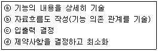
- ⓐ→ⓑ→ⓒ→ⓓ
- ⓐ→ⓒ→ⓑ→ⓓ
- ⓒ→ⓓ→ⓐ→ⓑ
- ⓒ→ⓑ→ⓐ→ⓓ
(정답률: 40%)
67. 시스템 검사의 종류 중 통합 시스템의 맥락에서 소프트웨어의 실시간 성능을 검사하며, 모든 단계에서 수행되는 것은?
- 복구 검사
- 보안 검사
- 성능 검사
- 강도 검사
(정답률: 77%)
68. 프로젝트에 내재된 위험 요소를 인식하고 그 영향을 분석하여 이를 관리하는 활동으로서, 프로젝트를 성공시키기 위하여 위험 요소를 사전에 예측하여 대비하는 모든 기술과 활동을 포함하는 것은?
- Critical Path Method
- Risk Analysis
- Work Breakdown Structure
- Waterfall Model
(정답률: 70%)
69. 소프트웨어 재공학 활동 중 기본 소프트웨어의 명세서를 확인하여 소프트웨어의 동작을 이해하고 재공학 대상을 선정하는 것은?
- Analysis
- Reverse Engineering
- Restructuring
- Migration
(정답률: 51%)
70. 어떤 모듈이 다른 모듈의 내부 논리 조직을 제어하기위한 목적으로 제어신호를 이용하여 통신하는 경우이며, 하위 모듈에서 상위 모듈로 제어신호가 이동하여 상위 모듈에게 처리 명령을 부여하는 권리 전도현상이 발생하게 되는 결합도는?
- Control Coupling
- Data Coupling
- Stamp Coupling
- Common Coupling
(정답률: 65%)
71. 다음 중 가장 우수한 소프트웨어 설계 품질은?
- 모듈간의 결합도는 높고 모듈내부의 응집력은 높다.
- 모듈간의 결합도는 낮고 모듈내부의 응집력은 높다.
- 모듈간의 결합도는 낮고 모듈내부의 응집력은 낮다.
- 모듈간의 결합도는 높고 모듈내부의 응집력은 낮다.
(정답률: 73%)
72. 프로젝트 일정 관리 시 사용하는 PERT 차트에 대한 설명에 해당하는 것은?
- 각 작업들이 언제 시작하고 언제 종료되는지에 대한 일정을 막대 도표를 이용하여 표시한다.
- 시간선(Time-line) 차트라고도 한다.
- 수평 막대의 길이는 각 작업의 기간을 나타낸다.
- 작업들 간의 상호 관련성, 결정경로, 경계시간, 자원할당을 제시한다.
(정답률: 55%)
73. 유지보수의 종류 중 다음 설명에 해당하는 것은?
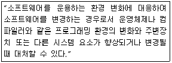
- Perfective maintenance
- Corrective maintenance
- Preventive maintenance
- Adaptive maintenance
(정답률: 63%)
74. 소프트웨어 품질 목표 중 소프트웨어를 얼마만큼 쉽게 수정 할 수 있는가의 정도를 의미하는 것은?
- Correctness
- Integrity
- Flexibility
- Portability
(정답률: 56%)
75. 자료흐름도의 구성 요소로 옳은 것은?
- process, data flow, data store, comment
- process, data flow, data store, terminator
- data flow, data store, terminator, data dictionary
- process, data store, terminator, mini-spec
(정답률: 64%)
76. CPM 네트워크가 다음과 같을 때 임계경로의 소요기일은?
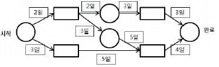
- 10일
- 12일
- 14일
- 16일
(정답률: 67%)
77. 프로젝트 팀 구성의 종류 중 분산형 팀 구성에 대한 설명으로 옳지 않은 것은?
- 의사결정이 민주주의 식이다.
- 프로젝트 수행에 따른 모든 권한과 책임을 한명의 관리자에게 위임한다.
- 다양한 의사 교류로 인해 의사 결정 시간이 늦어질 수 있다.
- 팀 구성원 각자가 서로의 일을 검토하고 다른 구성원이 일한 결과에 대해 같은 그룹의 일원으로 책임진다.
(정답률: 75%)
78. 객체 지향 설계 단계의 순서가 옳은 것은?
- 문제 정의 → 요구 명세화 → 객체 연산자 정의 → 객체 인터페이스 결정 → 객체 구현
- 요구 명세화 → 문제 정의 → 객체 인터페이스 결정 → 객체 연산자 정의 → 객체 구현
- 문제 정의 → 요구 명세화 → 객체 구현 → 객체 인터페이스 결정 → 객체 연산자 정의
- 요구 명세화 → 문제 정의 → 객체 구현 → 객체 인터페이스 결정 → 객체 연산자 정의
(정답률: 55%)
79. 화이트박스 테스트에 대한 설명으로 옳지 않은 것은?
- 조건검사, 루프검사, 데이터 흐름 검사 등이 있다.
- 설계 절차에 초점을 둔 구조적 테스트이다.
- 인터페이스 오류, 행위 및 성능 오류, 초기화와 종료 오류 등 을 발견하기 위하여 사용된다.
- 원시 코드의 모든 문장을 한 번 이상 실행함으로써 수행된다.
(정답률: 44%)
80. 자료 사전에서 자료의 정의 (“is composed of”)를 나타내는 기호는?
- =
- +
- ( )
- { }
(정답률: 63%)
5과목: 데이터 통신
81. 회선 교환 방식에 대한 설명으로 틀린 것은?
- 호 설정이 이루어지고 나면 정보를 연속적으로 전송할 수 있는 전용 통신로와 같은 기능을 갖는다.
- 호 설정이 이루어진 다음은 교환기 내에서 처리를 위한 지연이 거의 없다.
- 회선이용률 면에서는 비효율적이다.
- 에러 없는 정보전달이 요구되는 데이터 서비스에 매우 적합 하다.
(정답률: 38%)
82. OSI 7계층 중 네트워크 계층에 대한 설명으로 틀린 것은?
- 데이터의 암호화 및 압축 기능이 있다.
- 통신망을 통한 목적지까지 패킷 전달을 담당한다.
- 패킷의 경로 선택 및 중계 역할을 한다.
- 과도한 패킷 유입에 대한 폭주 제어 기능을 한다.
(정답률: 57%)
83. 문자의 시작과 끝에 각각 Start 비트와 Stop 비트가 부가되어 전송의 시작과 끝을 알려 전송하는 방식은?
- 비동기식 전송
- 동기식 전송
- 전송 동기
- PCM 전송
(정답률: 50%)
84. 디지털 데이터를 아날로그 신호로 변환하는 방법이 아닌 것은?
- ASK
- FSK
- PSK
- PCM
(정답률: 71%)
85. 8진 PSK 변조방식에서 변조속도가 2400[Baud]일 때 정보 신호의 전송속도는 몇 bps 인가?
- 2400
- 4800
- 7200
- 9600
(정답률: 68%)
86. 문자 동기 전송방식에서 데이터 투과성(Data Transparent)을 위해 삽입되는 제어문자는?
- ETX
- STX
- DLE
- SYN
(정답률: 58%)
87. 이동통신 가입자가 셀 경계를 지나면서 신호의 세기가 작아 지거나 간섭이 발생하여 통신 품질이 떨어져 현재 사용 중인 채널을 끊고 다른 채널로 절제하는 것을 의미하는 것은?
- Mobile Control
- Location registering
- Hand off
- Multi-Path fading
(정답률: 66%)
88. ICMP(Internet Control Message Protocol)에 대한 설명으로 틀린 것은?
- IP 프로토콜에서는 오류 보고와 수정을 위한 메커니즘이 없기 때문에 이를 보완하기 위해 설계되었다.
- ICMP는 네트워크 계층 프로토콜이다.
- ICMP 메시지는 하위 계층으로 가기 전에 IP 프로토콜 데이터그램 내에 캡슐화 된다.
- ICMP 메시지는 4바이트의 헤더와 고정 길이의 데이터 영역으로 나뉜다.
(정답률: 49%)
89. TCP/IP 모델 중 패킷을 목적지까지 전달하기 위해 경로선택과 폭주 제어기능을 가지고 있으며, ARP, RARP 등의 프로토콜이 제공되는 계층은?
- 응용계층
- 전송계층
- 인터넷계층
- 물리계층
(정답률: 40%)
90. CSMA/CD에서 사용되는 LAN 표준 프로토콜은?
- IEEE 802.3
- IEEE 802.4
- IEEE 802.5
- IEEE 802.12
(정답률: 62%)
91. OSI 7계층 중 데이터 링크 계층의 프로토콜은?
- PPP
- RS-232C/V.24
- EIA-530
- V.22bis
(정답률: 63%)
92. HDLC의 프레임 중 링크의 설정과 해제, 오류 회복을 위해 주로 사용되는 것은?
- Information Frame
- Supervisory Frame
- Response Frame
- Unnumbered Frame
(정답률: 38%)
93. 데이터 전송 시 오류의 발생 원인에 대하여 잘못 설명한 것은?
- 감쇠 .전송 신호 세력이 전송 매체를 통과하는 과정에서 거리에 따라 약해지는 현상
- 지연 왜곡 .도체내의 온도에 따른 전자 운동량의 변화와 전자기적 충격으로 주파수가 왜곡 지연되는 현상
- 상호 간섭 잡음 .서로 다른 주파수들이 하나의 전송 매체를 공유할 때 주파수 간의 합이나 차로 인해 새로운 주파수가 생성되는 잡음
- 누화 잡음 .인접한 전송 매체의 전자기적 상호 유도 작용에 의해 생기는 잡음으로, 전화 통화중 다른 전화의 내용이 함께 들리는 현상
(정답률: 50%)
94. 패킷 교환 방식 중 가상 회선 방식에 대한 설명으로 옳은 것은?
- 네트워크 내의 노드나 링크가 파괴되거나 상실되면 다른 경로를 이용한 전송이 가능하므로 유연성을 갖는다.
- 경로 설정에 시간이 소요되지 않으므로 한 스테이션에서 소수의 패킷을 보내는 경우에 유리하다.
- 매 패킷 단위로 경로를 설정하기 때문에 네트워크의 혼잡이나 교착상태에 보다 신속하게 대처한다.
- 패킷들은 경로가 설정된 후 경로에 따라 순서적으로 전송되는 방식이다.
(정답률: 38%)
95. 동축 케이블의 특징으로 가장 옳은 것은?
- 초기에는 주로 장거리 전화 전송망에 사용되었으나, 지금은 케이블 TV 분배망이나 LAN 등에 널리 쓰인다.
- 다른 전송매체에 비해 가격이 비싸다.
- 잡음 저항력이 좋으며 도청으로부터 고도의 안정성을 보장한다.
- 거리, 대역폭, 데이터 전송률에 있어 많은 제약을 가지고 있다.
(정답률: 47%)
96. HDLC 프로토콜에 대한 설명으로 틀린 것은?
- 점대점 링크 및 멀티포인트 링크를 위한 프로토콜이다.
- 반이중 통신과 전이중 통신을 모두 지원한다.
- 비동기식 전송방식을 사용한다.
- 슬라이딩 윈도우 방식에 의해 흐름 제어를 제공한다.
(정답률: 38%)
97. 패킷교환 표준 프로토콜 X .25의 구성계층 중 OSI의 계층 3과 계층 4의 일부 기능을 포함하는 것은?
- 패킷계층
- 링크계층
- 물리계층
- 인터넷계층
(정답률: 48%)
98. PPP(Point-to-Point Protocol)에 대한 설명으로 틀린 것은?
- 인터넷 접속에 사용되는 IETF의 표준 프로토콜이다.
- 오류 검출만 제공되며, 오류 복구와 흐름제어 기능은 제공되지 않는다.
- IP 패킷의 캡슐화를 제공한다.
- 동기식 점대점 링크에서만 사용할 수 있다.
(정답률: 39%)
99. OSI 7계층 중 홉 단위로 수행되는 프로토콜로서 실제 패킷 전달을 위해 통신망 노드에서 필요로 하는 프로토콜로만 나열된 것은?
- 응용계층, 표현계층, 세션계층
- 세션계층, 트랜스포트계층, 데이터링크계층
- 네트워크계층, 데이터링크계층, 물리계층
- 트랜스포트계층, 네트워크계층, 데이터링크계층
(정답률: 49%)
100. 자동 재전송 요청(ARQ) 중 데이터 프레임의 정확한 수신 여부를 매번 확인하면서 다음 프레임을 전송해 나가는 가장 간단한 오류제어 방식은?
- Go-back-N ARQ
- Stop-and-Wait ARQ
- Selective-Repeat ARQ
- Continuous ARQ
(정답률: 68%)